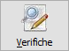
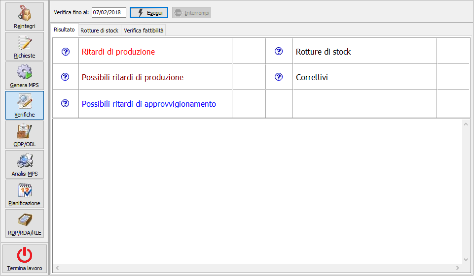
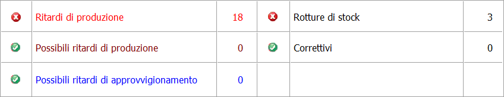
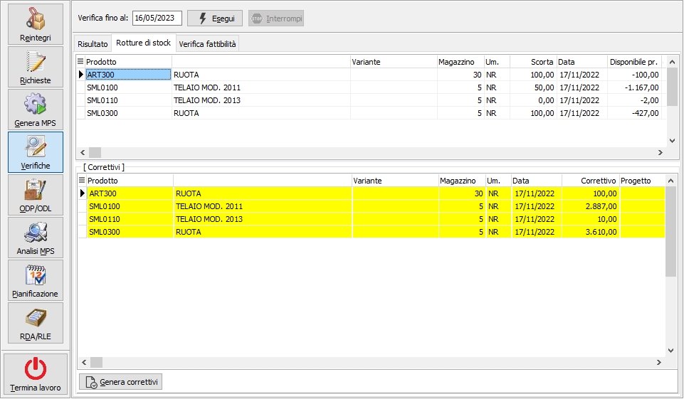
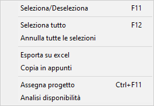
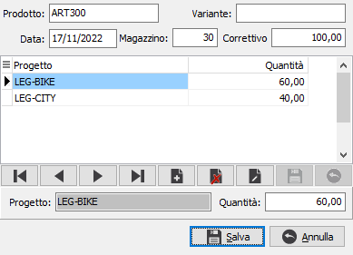
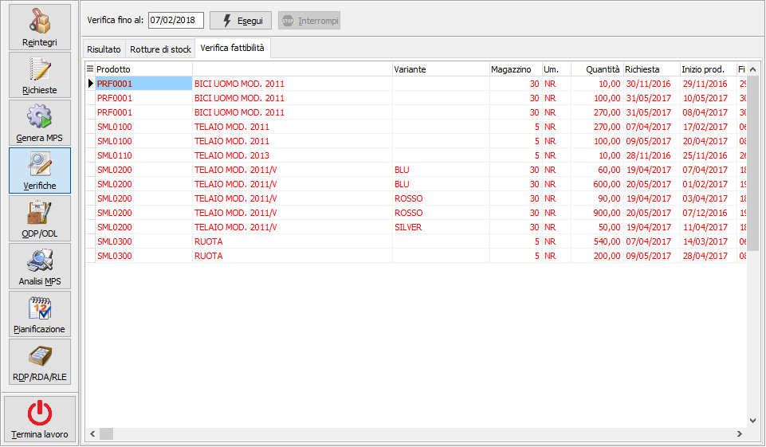
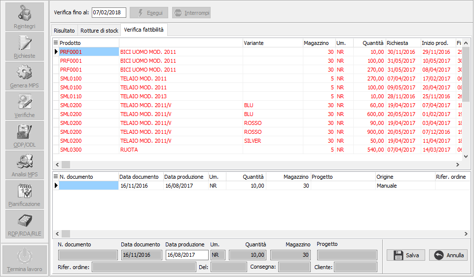

Verifica piano

La verifica di fattibilità del piano analizza ed evidenzia le situazioni di criticità del piano stesso.Viene proposta la data di fine elaborazione basandosi sui giorni presenti in configurazione, durante la fase di elaborazione è possibile interrompere in qualsiasi momento con l'apposito pulsante che si abilita automaticamente, l'interruzione è sottoposta a richiesta di conferma. Prima della verifica gli indicatori di risultato sono neutri.

Al termine della verifica gli indicatori evidenziano le segnalazioni:

La parte destra indica le rottura di stock (disponibilità non coperta); il caso si verifica quando analizzando la disponibilità nel tempo del composto la disponibilità non è sufficiente a coprire le richieste. Il sistema propone la creazione di correttivi che consentano di soddisfare la richiesta.
La parte sinistra indica le verifica di fattibilità; vengono segnalati gli ODP per i quali si verifica una delle seguenti condizioni:
Ritardi di produzione: se la produzione dell’ordine è pianificata nel passato (rispetto alla data di sistema)
Possibili ritardi di produzione: se la produzione di uno dei semilavorati (a qualsiasi livello) è pianificata nel passato (rispetto alla data di sistema)
Possibili ritardi di approvvigionamento: se l’approvvigionamento in uno dei componenti (a qualsiasi livello) è pianificata nel passato (rispetto alla data di sistema)
Qualora si verifichi una di queste condizioni è possibile modificare la data di richiesta produzione della RDP in modo che rielaborando il piano la produzione non occorra più nel passato.
Nella pagina rotture di stock vengono riepilogate le rotture di stock e per quelle scoperte vengono proposti i correttivi.


L’operatore può confermare la proposta oppure selezionare/deselezionare manualmente le RDP da creare. Sulla griglia dei correttivi è possibile selezionare o deselezionare un rigo tramite il doppio click del mouse oppure utilizzare il menù contestuale richiamabile col tasto destro del mouse.

Se attiva la gestione dei progetti è presente la colonna Progetto ed nel menù contestuale della griglia dei correttivi è presente la scelta "Assegna progetto" che è attiva sui correttivi che non hanno ancora un progetto assegnato. Eseguendo la scelta si apre una finestra che riporta in alto, in visualizzazione, i dati del correttivo e consente di inserire un codice progetto ed una quantità.Sulla finestra sono attivi i seguenti controlli:
- non è possibile inserire lo stesso progetto più volte
- non è possibile inserire una quantità totale maggiore di quella del correttivo originale
Sul campo quantità col doppio clic del mouse si assegna al campo la differenza tra la quantità del correttivo originale ed al totale delle quantità assegnate ai progetti. Alla pressione del pulsante Salva viene sostituito il correttivo originale con tante righe per quanti sono i progetti inseriti; se non è stata assegnata l'intera quantità originale del correttivo viene inserito un nuovo correttivo senza progetto.
Effettuando nuovamente la verifica, senza effettuare la generazione dei correttivi, le eventuali assegnazioni a progetti andranno perdute.
Il correttivo, se confermato tramite la pressione del pulsante "Genera correttivi", determina la generazione di apposite RDP e quindi rielaborando nuovamente il piano la disponibilità verrà adeguata. La generazione dei correttivi invalida il piano di produzione attuale.
Nella pagina verifiche di fattibilità vengono riepilogati i casi di ritardo o possibile ritardo evidenziati nello stesso colore degli indicatori della prima pagina;

Con il doppio clic sul rigo, se la correzione è fattibile a livello di RDP, si apre la parte bassa che consente la modifica della data di produzione proponendo direttamente quella ricalcolata; premendo il pulsante Salva la modifica diventa effettiva ed il rigo assume lo sfondo grigio.

La modifica della data di richiesta produzione della RDP viene replicata anche sugli ordini clienti originali (nel caso di RDP da ordini) fornendo di fatto la possibilità all’operatore che si occupa degli ordini clienti di verificare attraverso apposita funzione eventuali rinvii nelle consegne che devono essere comunicati al cliente.
Le modifiche effettuate in questa fase invalidano il piano di produzione attuale che dovrà essere rigenerato.